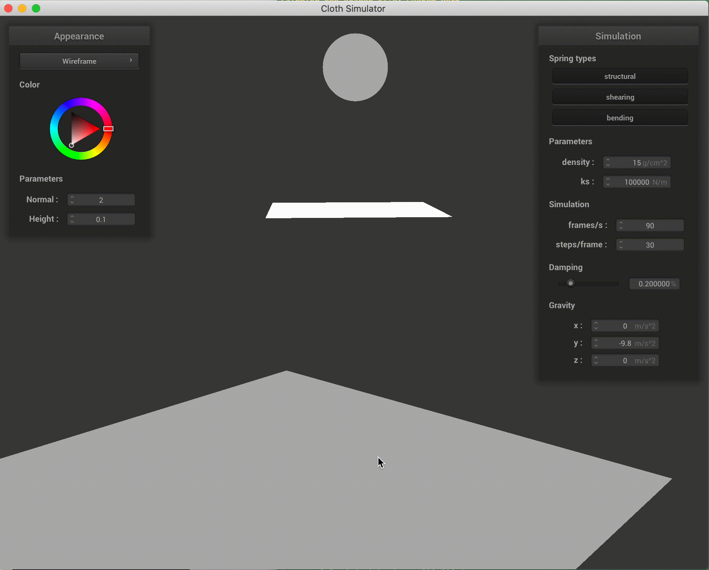
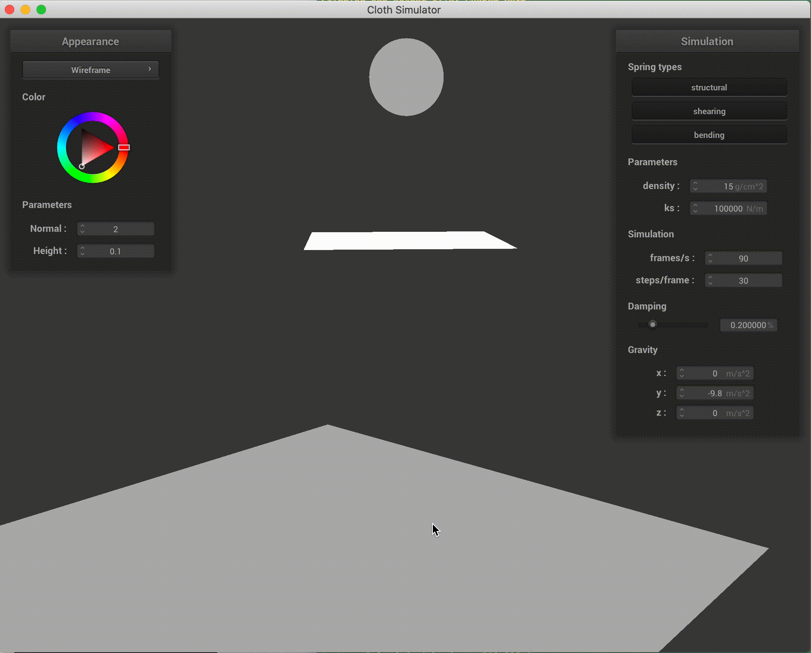

|

|

|

|
This project's focus was on extending the cloth simulation of project 4 to simulate materials as they fracture and break in different ways. The project consisted of two primary components; code infrastructure changes and fracture modeling. Much of the work spent on this project involved making changes to underlying structure of the project like enabling forces to act on spheres, introducing resistive elastic forces from a mesh on a sphere, and modifying the shaders to enable fractured appearances. On the fracture modeling side, we implemented an approach from a paper we found which generated realistic looking tears. We then added our own ideas to this approach for more interesting tearing and fracturing effects.
The first code change necessary to the simulation backbone was to enable spheres to move as forces (e.g. gravity) are applied. This was necessary so that we could collide spheres with pinned meshes to analyze stretches and tears.
To make this code change, we simply added a simulate method to the collisionObject
class that is called for every collision object in the same loop that the cloth's simulate is.
As well, we added a Vector3D force vector that accumulates forces applied to a sphere. The
sphere also maintains its first two moments so that we can update its position and velocity as in the
pointmass mesh. At every simulation step, we update the sphere as a rigid body around its center which
moves according to the following equations $x_t$
$$\begin{align} v_t & = k_dv_t + \Delta_t f / m \\ x_t & = x_{t-1} + \Delta_t * v_t \end{align}$$
where $v$ is velocity, $x$ is position, $k_d$ is a damping coefficient, $f$ is the accumulated force
vector, and $m$ is the sphere mass.
The modeling assumption used here are that the sphere is accurately modeled as a rigid body.
For the result of this code change see the first figure in the results.
The second code change to enable realistic fracturing was to make the mesh resist the sphere by applying an opposing force to the sphere. To enable the cloth to apply a resistive force, we added a constant $k_r$ to allow us to control the "stretchiness" of the mesh and added the following force point by point on a collision to the sphere $$k_r||x_a - x_b|| * \frac{c - x_b}{||c - x_b||}$$ where $x_a$ is the position of a point before sphere displacement, $x_b$ is the position of the point after sphere displacement, and $c$ is the center of the sphere.
Overall this code change involved a small change to implement the equation above and a few larger structural changes to how collisions are handled and when sphere moments are updated.
The results of this change are in figures 2 and 3 below.
The third major code change we had to make was to enable shaders to show the breaking. To make this change, we decided to break in units of triangles for the shader. If a spring is broken, it is marked broken along with its point masses. We use this flag as a mask variable to each of the shaders; the shaders set the color of a vertex to $(0, 0, 0, 0)$ if it has been broken.
The result of this is that the shaders now show holes in the mesh. Although the examples given below are jagged, you can image with a higher resolution mesh the breaks appear more fine. Higher resolution meshes seemed to slow down our computers unbearably so, and as a result these examples are not included.
An example image before this code change is seen in Figure 4. Figures 5 and 6 represent successful breaks with the shaders.
Below are our results, open in a new tab if they load slow.
|
|

|
|
|
|